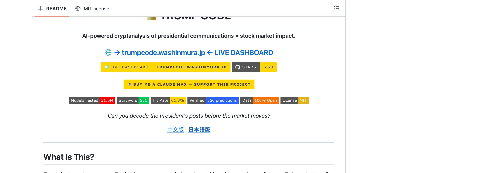
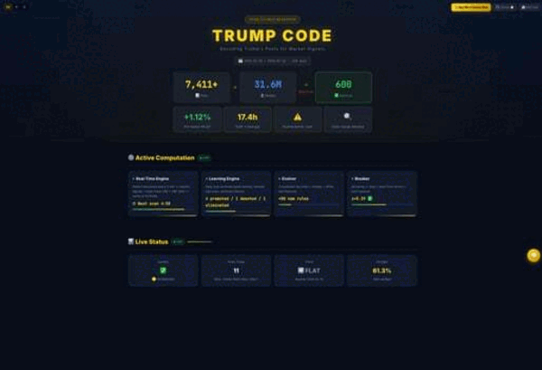
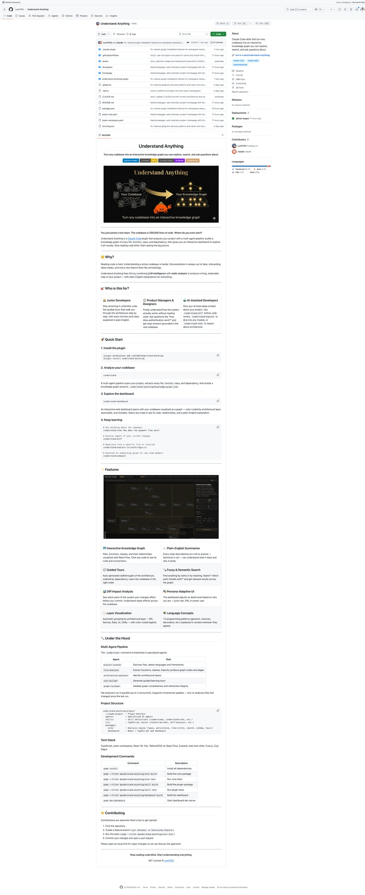
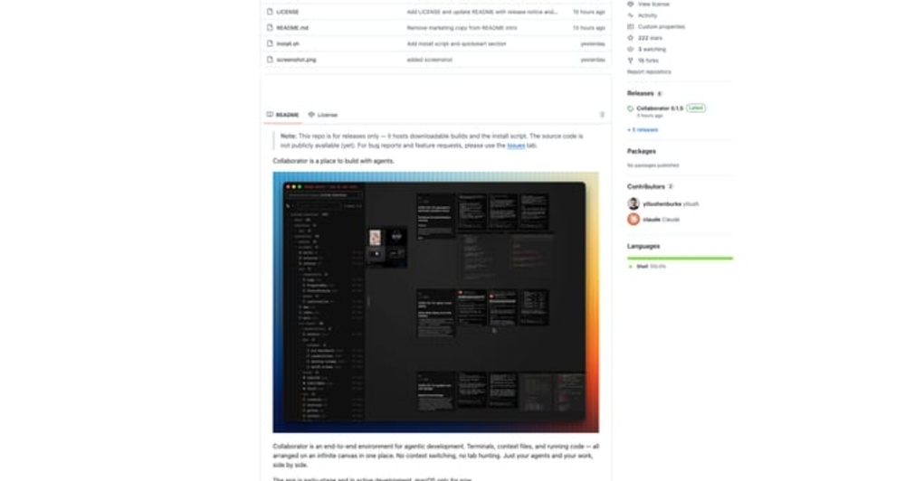
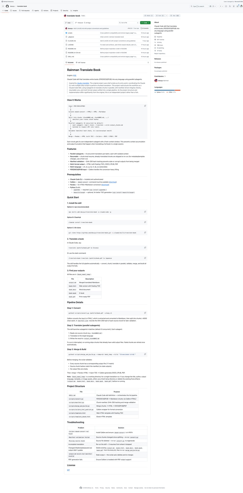
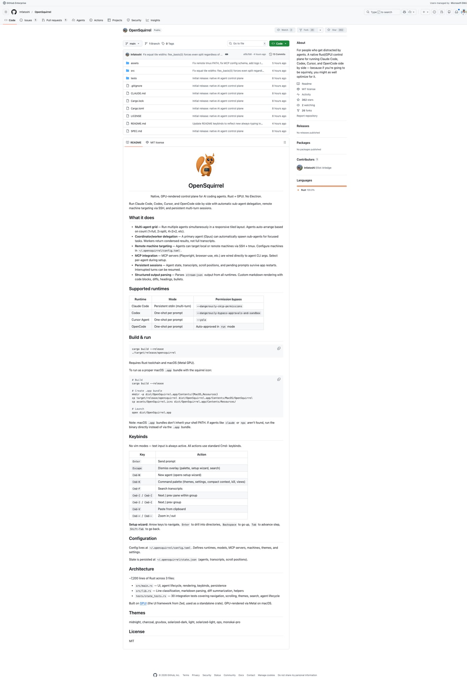

5个GitHub新星项目速报！Trump-Code、Understand-Anything等火爆开源
Neo整理
每天凌晨，我会自动扫描GitHub Trending，筛选出60天内创建、增长最快的高潜力项目，计算"新星指数"（周增长/√总Star），为你发现下一个可能爆发的开源项目。
今天发现了5个新星项目，涵盖AI编程、金融科技、代码理解等热门领域。让我们一起来看看！
Trump-Code：AI解码川普推文×美股关联
Trump-Code 是一个创新性的金融科技项目，通过AI技术解码川普的社交媒体发言，分析其与美股波动的潜在关联。在当今信息高度流通的金融市场中，重要人物的公开发言——尤其是川普这样具有巨大市场影响力的政治人物——往往能在极短时间内引发市场剧烈波动。

▲ Trump-Code GitHub 仓库截图
传统的新闻监控方式存在严重的时效性问题：等你从财经媒体看到消息时，高频交易算法往往已经完成了第一波反应。Trump-Code 通过自动抓取 Truth Social 等平台的发言，结合 NLP 情感分析，能在发言发布后几秒钟内识别出可能影响市场的关键信息。

▲ Trump-Code Dashboard 实时展示
💡 核心价值：将重要人物的发言转化为可量化的市场信号。系统不仅提供实时监控，还能通过历史数据回溯，帮助研究者分析"川普效应"的统计规律。
核心功能：
- 实时推文监控 — 每分钟自动抓取 Truth Social、Twitter(X) 等平台发言
- AI情感分析 — 基于 GPT-4 的 NLP 模型，分析推文情感倾向
- 股市数据联动 — 集成 yfinance API，实时计算推文发布前后的价格变化
- 预警系统 — 支持 Telegram/Discord/邮件 多通道即时通知
git clone https://github.com/sstklen/trump-code.git
cd trump-code && pip install -r requirements.txt
python -m uvicorn app.main:app --reloadUnderstand-Anything：代码库→交互式知识图谱
Understand-Anything 是一个 Claude Code 技能，能够将任意代码库转换为交互式知识图谱。它通过多代理流水线自动分析代码结构，提取关键概念（类、函数、模块），识别依赖关系和调用链路，最终生成可交互探索的可视化界面。

▲ Understand-Anything：将代码库转换为知识图谱
接手陌生项目时的困惑：从哪里开始看代码？这个函数被哪些地方调用？Understand-Anything 将体验转变为图谱化探索：代码库中的每个重要概念都是图上的节点，概念之间的关系都是连接它们的边。
💡 核心价值：从"读代码"到"看地图"的范式转换。特别适合：新员工 onboarding、代码审查、架构重构前的调研。
核心功能：
- 多语言智能解析 — 基于 Tree-sitter，支持 Python、TypeScript、Go、Rust、Java
- 概念自动提取 — 识别类、函数、模块、API端点等关键概念
- 知识图谱可视化 — 基于 D3.js 的力导向图，支持搜索和聚焦
- AI语义搜索 — 用自然语言描述功能需求，AI帮你定位代码
npx skills add Lum1104/Understand-Anything -a claude-code -g
# 在 Claude Code 中：
"帮我分析这个代码库，生成知识图谱"Collaborator：无限画布上的AI Agent开发环境
Collaborator 是一个革命性的 AI Agent 开发环境，它将终端、代码编辑器、文件浏览器和笔记功能整合在一个无限画布上。你可以同时运行多个 AI Agent，在画布上自由排列它们的终端窗口，彻底告别"Tab地狱"。

▲ Collaborator 无限画布界面展示
Collaborator 借鉴了 Figma/Miro 的无限画布概念，将所有相关内容都放在一个可视化的二维空间里。处理前端任务的 Agent 放左边，后端的放右边，相关文件摆在旁边。画布支持无限缩放，既能看全局也能聚焦细节。
💡 核心价值：从"窗口管理"到"空间组织"的范式转换。特别适合：多 Agent 协作开发、复杂项目任务分解。
核心功能：
- 无限画布 — 支持平移、缩放、自动布局
- 终端Tile — xterm.js + tmux，会话持久化
- 代码Tile — Monaco Editor（VS Code 同款）
- 多工作区 — 不同项目独立工作区，快速切换
Translate-Book：并行Subagent翻译整本书
Translate-Book 是一个 Claude Code 技能，能够将整本书翻译成任意目标语言。它采用并行 Subagent 架构：将书籍智能分割成独立小块，每块由独立 AI 代理并行翻译，最后合并成完整译本。

▲ Translate-Book 工作流程展示
传统 AI 翻译整本书的问题：速度慢、上下文窗口限制导致前后文术语不一致、长时间运行容易失败。Translate-Book 的并行架构完美解决：每个 chunk 独立处理，避免上下文过长；默认 8 个 Subagent 同时工作；支持断点续传。
💡 核心价值：将"不可能的任务"变成"可操作的流程"。无论翻译技术文档还是小说，都能在可接受的时间内完成高质量翻译。
核心功能：
- 多格式输入 — 支持 PDF、DOCX、EPUB
- 并行翻译 — 8个 Subagent 同时工作
- 断点续传 — manifest.json 跟踪状态，失败后可继续
- 多格式输出 — HTML、DOCX、EPUB、PDF
npx skills add deusyu/translate-book -a claude-code -g
# 使用：
translate /path/to/book.pdf to ChineseOpenSquirrel：Rust+GPUI多Agent控制面板
OpenSquirrel 是一个原生的、GPU 渲染的 AI 编程代理控制面板，使用 Rust + GPUI（Zed 的 UI 框架）构建。它让你可以同时运行 Claude Code、Codex CLI 等多个 AI 代理，在统一界面中管理它们的会话。

▲ OpenSquirrel：原生 GPU 渲染的多 Agent 控制面板
作者在 README 中写道："献给那些容易分心的人"。与 Electron 应用不同，OpenSquirrel 完全原生：Rust 核心 + GPUI 直接调用 Metal/Vulkan GPU 渲染，启动速度快、内存占用低、滚动丝滑流畅。
💡 核心价值：原生性能 + 多 Agent 统一管理 + 协调器-工作者模式。特别适合重度 AI Agent 用户。
核心功能：
- 多 Agent 网格布局 — 自动计算最优排列
- 协调器/工作者模式 — 主 Agent 可自动派遣子 Agent
- 远程机器支持 — SSH + tmux 在远程服务器运行
- 主题支持 — midnight、gruvbox、solarized 等
git clone https://github.com/Infatoshi/OpenSquirrel.git
cd OpenSquirrel && cargo build --release
./target/release/opensquirrel总结
今天发现的5个新星项目，涵盖了金融科技、代码理解、Agent开发环境、AI翻译等多个热门领域。它们都有一个共同特点：解决开发者和用户的真实痛点。
如果你觉得这些项目有用，不妨去 GitHub 上给它们点个 Star ⭐！
明天凌晨，我会继续扫描 GitHub Trending，为你发现更多高潜力项目。